4.1. Rendering preferences
The
most important dialog of the program! All rendering options are set
here! This window is always opened after the program has been started.
If not so or when it is in the background, you can bring it to the
front through the menu 'Window >> Preferences for: xxx'. It can also be brought to the front by clicking the button in the tool bar of the "Text Editor Window".
All
options are available via this one window and are subdivided into five
categories, each accessible through tabs. The five groups are: 'Files & Paths', 'Image & Quality', 'Bounding & Preview', 'Clock Settings' and 'Misc'.
Once you get more familiar with the layout of this window, you will
quickly see if all options are appropriate for a specific rendering.
At the bottom of the window some buttons are available.
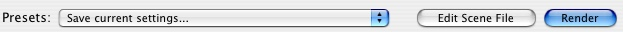
The "Save current settings..."
pop-up lets you save all preferences (except input and output path) set
at that time. The saved preferences become then available to replace
all options whenever you select them from this pop-up. The saved
preferences are also available for jobs added to the batch. It is of
course also possible to edit the saved options, or to reset them to the
defaults.
The "Edit Scene File" button opens the scene file which is shown in the 'Scene file path' of the 'Files & Paths' panel.
When you have set all preferences, you can render the scene by clicking the "Render"
button. The options set will only be used for this render (the options
are not saved to disk, only remembered until the next changes). The
only way to save the options to disk is with the "Save current settings..." pop-up at the bottom of the window.
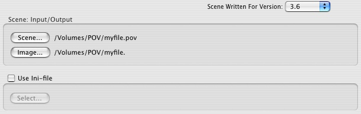
Language: The pop-up menu "Scene Written For Version:" contains the settings for the "+MV" Max Version command line switch for POV-Ray™. This determines what version of syntax POV-Ray™
will initially expect when parsing a scene. If this is an older version
of a scene file, you can set its version here. You can also insert a "#version" directive in the scene file itself, which is preferred, since it will then be carried across to other platforms.
|
Important: |
| This
version renders filter as filter and transmit like transmit. However if
you want to render older scenes with layered textures and filter you
should use version 3.1 to get the old results. |
Below
the version pop-up you can select an input scene file, output image and
an ini file. When you select an input file with the extension "xxx.pov", the name of the image output file (image) is set to "xxx." e.g. "Scene.pov" becomes "Scene.".
The proper extension will be added at rendering time, according to the type (TGA, PNG,..) you selected in the 'output options' of the 'Image & Quality' pane.
An ini file can also be selected. It will be passed on to POV-Ray™ as a last option so that any option set in the "Rendering Preferences Window"
will be overwritten by the options in the ini file. That is: if that
option is set in the ini file. An ini file must not contain 'all'
options.
Also, when the ini option is set, a green indicator will become visible above the 'Files & Paths' tab. This way, you will know at a quick glance if this option is set; even when another pane is active.
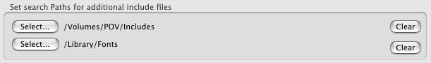
Files (like include files or image files) that POV-Ray™ needs to render a scene need not necessarily be located in the same folder as the scene file. However, you must tell where POV-Ray™ should look for them.
There is one folder where POV-Ray™
always looks; the folder where the scene file is located. This path is
automatically shown at the previously mentioned scene input button. It
changes every time you select another input file.
In the "Application Preferences Window" on the 'System Includes' tab (see Section 3.1.2, “Preferences”), additional paths can be selected where POV-Ray™
should look for include files, images, fonts, macros or whatever you
use often. This is meant for the folders with collections of files that
are often used.
Finally, POV-Ray™ looks a last time for search paths which you selected with the option 'Set search Paths for additional include files'. This is meant for files specific to the rendering scene.
A path is emptied by clicking the "Clear" buttons, located on the right side of every path.
All options related to the size, type of output file and rendering quality are set on this panel.
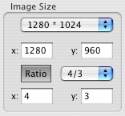
There are a few standard sizes accessible via the "preset sizes" pop-up. The list is divided in three sections.
- The top section holds image sizes for a square-sized image;
- The middle section the 'normal' rectangle sizes (y=3/4x);
- Finally, the bottom section holds rectangle sizes where y=1/2x.
Any selection made in the pop-up is copied in the 'x' (width) and 'y'
(height) fields under the pop-up menu. Whenever you want a size that is
not available in the pop-up, you can enter it manually in these edit
fields.
Next there is a toggle button were you can set
a 'Ratio' for the image size. If you are mostly working with a fixed
ratio (say 16:9) but different sizes, this option will make it easy for
you. Press the "ratio" button
and enter the required ratio: either through the pop-up with predefined
ratios, or manually with the width value in the 'x' field and the
height value in the 'y' field. When you change the width of the image,
the height value is immediately adjusted according to the ratio. In the
same way the width value is immediately adjusted to the ratio when you
change the image height.
When choosing a predefined size from the pop-up, the width is copied and the height adjusted according to the set ratio.
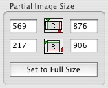
In
this group you will find 4 more fields: Start- and End-columns (top)
and Start- and End-rows (bottom). Values entered here will cause POV-Ray™ to create an image with the full size shown in the 'Image size' frame, but will only render the area specified in the fields of the 'Partial Image'
frame. When creating a time consuming scene, this 'clipping' will speed
up the time necessary to calculate the required image part you are
designing on, because only the selected part will be calculated and
rendered.
Whenever you select another image size from
the pop-up or enter the values manually, the partial image size is set
proportionally to the newly specified size. Because it is also possible
to specify the partial image directly in the image window by dragging
it (use the 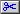 option
), this means that you could render a small image at low quality,
select the partial image and then change the size to a large image at
high quality. The partial selection has now been adjusted to the new
size in a proportional way. This way it is possible to reduce the
rendering time considerably if you want to check only a small part of
the image at a high resolution.
Normally only the selected part of the image will be rendered, but shown in a "Display Window" with the full sizes specified in the 'Image Size' frame. The background will be white. If you only want to see the rendering area, set the 'Only Display Part' option in the 'Output options' frame (Display Options).
Do not forget to use the "Set to Full Size" button if you no longer want to render a partial image!
|
Note: |
| When
you render a partial image and are saving to disk, the first line in
the image file will be the first line that is actually rendered (the
'Start Row'). The first lines which are not rendered are not saved and
therefore you can not continue an image when you didn't start at the
top line of the image! |
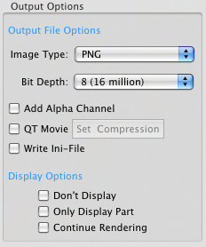
In the "Image type" pop-up you select the type of image that will be written to disk. Choices are:
|
Note: |
| Whenever you select an input file in the 'Files & Paths'
panel, and do not select manually an output file, the correct extension
will be added to the output file accordingly to the type you select
here! (.tga, .png, .ppm) |
If you have chosen 'Don't Save Image', some options of this frame are disabled. (Only 'Write ini-file' and 'Only Display part' are accessible).
The bit depth of the image can be set through the "Bit Depth" pop-up. Only the possible bit depths with the chosen file type are enabled.
It varies from 5 to 16 and is set through the pop-up. The higher, the
more colors your image will contain. 8 (true color = 16 million) is
quite enough.
'Add Alpha Channel'. When you have selected 'TGA' or 'PNG', you can choose if the alpha transparency data is output to the file (Please read the POV-Ray™ documentation for more information).
'QT Movie'.
When selecting this option, a series of rendered images is saved as a
Quick Time Movie. Via the 'Set Compression' button, additional
compression options can be set.
Whenever you turn the 'Write Ini-file' option on, POV-Ray™
will write (when you start rendering) an ini-file, located in the same
folder as the input file. In this file, all preferences are written. On
the Macintosh this ini-file is not very useful since rendering options
can be saved when you have the "Rendering Preferences Window"
in front. However, it is the only way to let someone with another
platform render your image with your options, without having to type
all these options.
'Don't Display'
means that the rendering image is not shown on the screen. The image is
only saved to disc and you are not able to see the results on the
screen. This could speed up rendering in some cases and might be useful
to render the batch file overnight.
|
Note: |
| If you should decide you do want to see the result on screen, you have to abort rendering. Then go to the "Rendering Preferences Window", disable the option 'Don't Display' and set 'Continue Rendering'.
Then render again: Rendering will go on from the point where you
aborted the rendering and it will be displayed on screen this time. |
'Only Display Part'.
When this option is activated AND you selected part of the image to be
rendered as a partial image, only the selected part will be shown,
filling the "Display Window"
completely. When the option is turned off, only the selected part is
rendered, but shown relative to the complete image. Note that this
affects only the displayed image: the saved image will always be the
complete image.
While rendering, you can always abort.
If you were saving your image to disk, it is possible to continue the
same image from the point were it was aborted. Simply select 'Continue Rendering' in the dialog and POV-Ray™ will continue to render the missing part of the image, making a total image.
|
Note: |
| Sometimes when you have selected the output type 'PNG' POV-Ray™ can not continue an image. The reason is: a temporary file is not deleted. Check for this in the "MegaPOV Message Window" and when this is the case, delete one of the two files. They are both located in the same folder. |
4.1.2.4. Rendering quality
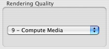
This
pop-up sets the calculations that should be made. The lower (0) the
less the image resembles 'reality' but the shorter the rendering time.
Final renderings should be made with quality set to 9, so that all
calculations are performed!
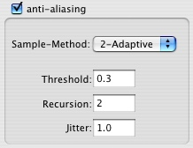
Quite complex to explain, please consult the POV-Ray™ docs about the anti aliasing options. To make it easier to follow the manual, here is a small table that shows where the POV-Ray™ options can be found in the dialog:
4.1.3. Bounding & preview
4.1.3.1. Histogram output
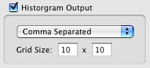
With this option on, you can see where POV-Ray™
spends most of its time in the scene. The image is divided in blocks,
the time spent in a block is accumulated and represented in colors. The
size of a block can be set in the edit fields. e.g. An image of 320 *
240 and the grid set to 10*10 will divide the image in 32*24 = 768
blocks.
You can set the type of the output file (Comma separated, PNG, PPM, Uncompressed Targa) with the pop-up.
4.1.3.2. Directing text streams
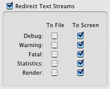
While parsing and rendering, POV-Ray™ displays some messages or errors in the "MegaPOV Message Window".
You can decide which messages are directed to that window and which
ones are written in a file. Select the appropriate checkboxes under 'To File' or 'To Screen' in the 'Redirect Text Streams' panel for the required type of messages.
Whenever
you redirect a stream to a file, the file name is created
automatically. The input file's name is used to do this. The extension ".pov" is replaced with:
These
files are located in the same folder as the input scene file. Only
those files that hold information will be created and will get the icon. When there were no warnings when the warning stream was directed to file you won't find a file!
The status stream is not implemented in POV-Ray 3.7 Unofficial!
|
Note: |
| When
the buffer of the message window is full, it will be cleared and the
last lines are displayed at the top. When this happens while important
information is displayed it can be lost. If you direct the text streams
to files, you can still find that information in the saved file. |
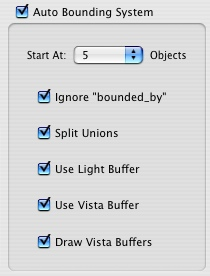
To reduce rendering time, POV-Ray™ has an automatic bounding system. In previous versions of POV-Ray™ this system wasn't as sophisticated as now and you had to manually add bounds. For the majority of scenes you render in POV-Ray™ 3.x the internal bounding is more effective than the manual bounding.
When deactivating the 'Auto Bounding System' group box, automatic bounding is always turned off.
If
you select any number in the pop-up, internal bounding is turned on
whenever the scene contains as much, or more objects than the number
specified in the pop-up. The default setting is 25 objects, it's a good
idea to set it lower, something like 5!
For more information, please read the POV-Ray™ manual! These are important options which will let you enjoy POV-Ray™ more, since these options affect the rendering time of a scene!
|
Note: |
| In this version of POV-Ray™ the option 'Draw Vista Buffers'
is very useful. Make it a habit to turn it on (when possible). It gives
a quick idea of the location of the objects in the scene. The size and
location of the rectangles can give a rough idea if the objects are at
the right locations. It helps you decide if the camera is at the right
location. You will only have to wait until the scene is parsed, it is
faster than the 'mosaic preview'. |
Unlike
the official compile, in this version the vista buffer is drawn very
fast. Just try it and you will like it that much that you can't live
without! :-)
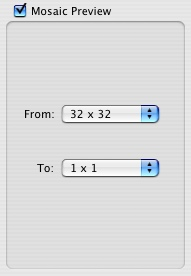
To gradually see the result of a scene you created, you can let POV-Ray™ render your image in blocks. For example if you set the 'From' pop-up at 32x32 and the 'To' pop-up at 16x16, POV-Ray™
will render every 32nd pixel, exploding that pixel to a square. This
gives a rough idea of the location of the objects, showing almost no
detail. When the last pixel ('pixel-block') is rendered, rendering will
restart at the top, now rendering every 16th pixel. More details are
visible now. When the 'To'-value is reached, POV-Ray™
will start rendering the image completely, doing every pixel again.
Therefore, when you want to do a total render, make sure you don't turn
mosaic preview on because POV-Ray™ will waste time while rendering a mosaic preview, a preview you are not interested in at that time!
|
Note: |
| To get a rough idea on the location of the objects it is better to use the option 'Draw Vista Buffer'.
It is faster. With the mosaic preview you have to render with small
blocks because you could miss little objects! However, mosaic preview
is the only way to gradually see the "real" image and colors and gain
some time while creating a scene! |
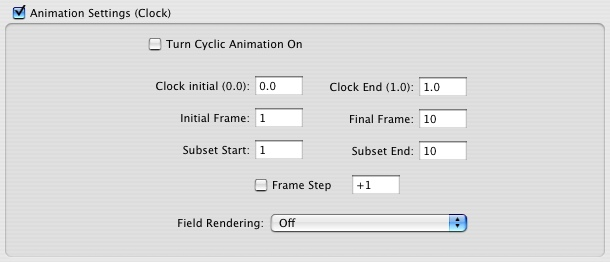
POV-Ray™ has a built in animation loop. This allows to easily create animations.
Turn it on and off with the check-box.
|
Note: |
| If
animation settings are turned on, a green indicator appears above the
'Clock Settings' tab. This way you will always know if the clock is
active or not, without having to open the pane. |
To set the clock values, enter the desired values in the edit fields.
'Clock Initial' and 'Clock end':
These set the value of the variable "clock" for the first frame and the last frame. POV-Ray™ calculates the values for the frames in between.
'Initial Frame' and 'Final Frame':
These set the number of frames POV-Ray™ will render and determine the "clock" value for each frame. Normally the "Initial Frame" will always be 1.
'Subset Start' and 'Subset End':
If
you wish to render an animation in steps you should use these options
instead of changing the 'Initial Frame' or 'Final Frame'.
|
Example: |
| If
you want to render frames 40 to 60 of an animation that consist of 100
frames, you set the 'Initial Frame' to 1, the 'Final Frame' to 100. To
make sure POV-Ray™ only renders scenes
40 to 60 you set 'Subset Start' to 40 and 'Subset End' to 60. Only
frames 40 to 60 will be rendered now and the right value for 'clock'
will be calculated. |
Here
you could specify a folder in which all rendered images (individual or
batch) will be saved. If it is turned off, the output path in the 'Files & Paths' will be used. If this option is turned on, a green indicator above the 'Misc'
tab reminds you that all images go to this specified folder. This
option can be particularly interesting when rendering a batch, so that
all rendered images can be found in one folder.
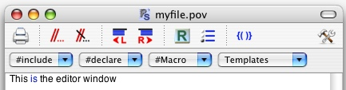
"Comment / Undo-comment". With a click on the
button, the '//' characters will be placed before each line of a
selected block of text. All these lines will thus be read as comment
lines by POV-Ray™. With a click on the button, the '//' characters preceding a line in a selected text block will be removed.
"Shift block". With the and buttons, a selected block of text can be moved one tab to the left or to the right with each click.
"Check braces". To do so, use the 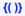 button in the tool bar of the "Text Editor Window".
First, put your cursor before an opening or closing brace - { ( [ ] ) }
- or select that brace. When you then click this icon, the text between
the two matching braces will become selected, quickly showing you where
the start and end of that scene file block are. It also checks if any
nested braces are matched. If no matching brace is found it will beep.
Another
possibility to check the braces is to double click on a brace: the
scene file block between this brace and the matching one is highlighted.
"Set Up". Clicking on will bring the "Render Preferences Window" to the front, allowing to change or check some rendering preferences before actually rendering the scene.
"Render". The button transfers the name and path of the text file to the "Render Preferences Window" and puts the rendering engine to work! All current options set in the window of rendering options are transmitted to POV-Ray™. Most menu's will be disabled.
Typing text in the "Text Editor Window". This follows most common rules of any text editor. A few things that makes it easier to use for POV-scenes are:
- This
editor uses auto indenting. If you have set tabs and hit the return
key, these are copied in the next line and the insertion point is
placed after the last tab. This helps to write clean and structured
source code.
|
Note: |
| When hitting the return key while holding the Cmd-key, the cursor will not indent but go to the margin line. |
- If the option 'Syntax Color' is set in the 'Editor' panel of the "Application Preferences Window", all keywords are colored when they are correct. If not so, you should better check the spelling of that keyword.
- #includes,
#declared items, #macros, comment lines (// and /*...*/) and strings
get their own colors, which makes it easier to recognize them as such.
- Include
files mentioned in the scene are copied into the pop-up at the top of
the window. Selecting a file from that pop-up will open that file in a
new text editor window.
- Declared identifiers or
macro identifiers are also copied in their respective pop-ups at the
top of the window. Selecting an item from these pop-ups will select it
in the scene file where it has been declared.
- Moving selected blocks, commenting blocks or checking if braces are balanced have already been mentioned.
- Don't forget to read about the template forms (see Chapter 6, Template forms), because they really make the difference in writing a scene!
|
Note: |
| The
content of a template form is always written at the cursor's position
if no block is selected. If there is a selection in the text, it will
be replaced with the content of the template form. Therefore, first
place your cursor at the spot where the item should be inserted ( or
select a block that should be replaced) and only then open the template
form. |
"Go to line".
At the bottom of the editor's window there is a field to go to a
specific line in the text. It shows the line where the cursor stands
on. Overwrite it and click enter to jump to a required line.
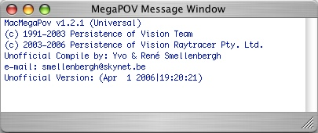
This window shows all messages and warnings.
At startup, there is a bit of info on the system.
When
rendering, more information shows: the version of MegaPOV used, authors
and contributors, libraries used, rendering options and paths. All this
information is shown in blue text.
Also all text streams (debug, warning, fatal, statistics and render) directed to screen are displayed in this window.
Statistics
are colored violet. Fatal errors and important warnings are shown in
red. Warnings and reminders use geen text and debug streams are
displayed in black.
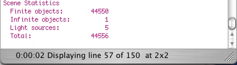
In the bottom status bar, progress on parsing and rendering is displayed.
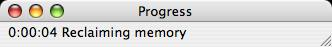
This window shows the same progress as shown in the bottom status bar of the message window.
Open the window via the Windows Menu.
This window displays the rendering image.
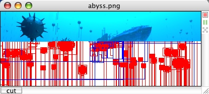
|
Note: |
| If an image is larger than 4092 pixels, the display is scaled down. The output is not affected. |
At
the top you will find the name and image type of the scene which is
rendering. When not saving to disc, it is also mentioned in the window
title.
A possible way to abort rendering is to use the button at the top right of this window.
To pause rendering, use the button on the display window. Clicking a second time on it, will continue the rendering process.
With the 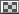
button you can toggle between displaying the alpha_channel or not. When
it is on, any part of the scene that has partial or full alpha-channel
transparency will be displayed as a grayscale checkerboard showing
through the scene. This could slow down rendering slightly in some
cases. To turn this feature off, click the "Alpha-channel"-toggle to turn it off.
It is possible to specify the partial image directly in the image window by dragging it (use the
option ). The selection is shown with a marquee and the coordinates of
the partial image are shown on the pane next to this button. When
releasing the mouse button the "Render Preferences Window"
is brought to the front. So you still have the opportunity to change to
a larger image size: the proportions of the partial image will be
adjusted to the new size.
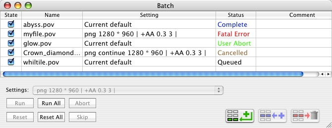
Depending
on the type of computer you are using, rendering a scene can take quite
a while! When using a batch job, you can create (write) a few scenes
and let them render automatically. This could be done during the night
or at a time when you normally won't use your computer. (Don't leave
the Image Type at 'Don't Save Image' in the "Render Preferences Window" for each entry in the batch, or else you will not see the results in the morning :-) )
To open the batch window, go to the menu "Batch > Show".
To add jobs to the batch, drag a ".pov" file on the list. You can also use "add" from the Batch menu or the 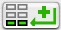 button at bottom of the window to open the file dialog. Using the 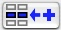
button at bottom of the window will add a job just before the selected
line. Repeat this for all other scenes that should be rendered.
Newly added jobs get the status 'Queued' and the render preferences from the "Render Preferences Window". This is marked in the 'Setting' column as 'Current default'.
For different render preferences, choose from the "Settings" pop-up. This pop-up menu contains all preferences which have been saved previously in the "Render Preferences Window". Select one or more jobs in the usual way and change the default settings all at once with the desired ones from the "Settings" pop-up.
When running the batch file there are a few possibilities in the 'Status' column:
-Before rendering, all jobs in the queue and marked 'Queued' (Black);
-The scene that is being rendered is marked 'Rendering' (Orange);
-All queued jobs are now 'Waiting' for rendering (Violet);
-Every scene that was rendered successfully is marked 'Complete' (Blue) and disabled;
-A batch job can be aborted and run again later. The job that is partially rendered is marked 'User Abort' (Green);
-If an error should occur, it will be marked with 'Fatal Error' (Red);
When
the batch file is run again, the scenes already done will be skipped.
The aborted ones will continue from the point where they have been
aborted.
When clicking the "Reset All" button, all scenes are marked as not rendered and will be processed again when the batch is run again.
|
Note: |
|
There is no limit (except memory available) on the number of entries in
the batch list, but only the ones with a marked checkbox are actually
used to run the batch. It makes things a bit easier when you are creating a
few scenes simultaneously. Modify your scenes, reset the Batch File,
tick the ones you want to run and click the "Run All" button. Do this over and over until your scenes win some awards :-).
Changing the order of the list is done by simple 'drag and drop': move the selected entry up or down the list.
|
"Run" is intended to run only the selected jobs. Select the lines for the required jobs in the list.
"Reset" rests all selected jobs to the status 'Queued'.
"Skip" aborts the current job and moves to the next in the list.
Chapter 5. Template forms
These are accessible from the 'Templates' menu or through the "Templates" pop-up in the "Text Editor Window". Pick the item you want to enter at the cursor position in your source scene and a dialog will open.
|
Note: |
| Since
this compile is a multi-patched version, all items corresponding to an
added patch feature are marked with an asterisk (*) or are shown in
blue. This way it is easy to make the distinction between features of
the official POV-Ray™ and our patched Unofficial compile. |
The dialogs are usually self-explanatory:
- The options are defined by POV-Ray™'s legal keywords: these are explained in the POV-Ray™'s documentation or the keywords added in MegaPOV which are explained in the manual for the patches.
-
If
a vector entry is required you are presented with two, three or four
edit fields where the coordinates can be entered. Example: 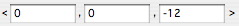
Often
you can specify the kind of vector you want through a pop-up (all
coordinates equal; parallel to one of the main axis; or all entries
different) which allows you sometimes to type only one coordinate
instead of three;
- If the entry should be a float or integer value, only one edit field is presented;
- When there is a choice between several keywords, a pop-up presents the possible choices;
- For
items which are optional, a check box is provided where you can turn
them on and off. If a value should be specified, an edit box will
appear as soon as the check box is turned on;
- Whenever
a color has to be specified, a color field is shown. Clicking on this
will open a color dialog. Enter the Red, Green and Blue components in
the edit fields. The change in color will immediately be displayed in
the field next to it. Clicking on the display field opens the system's
color picker, where you can set the desired color. If you want no hue,
but only a gray-value, use the "=" toggle button. The value entered in
the edit field for "Green" will specify the gray density.
-
The "Reset to default" button will reset all edit fields and pop-ups to the default values (usually POV-Ray™'s defaults) and switch most options off.
|
Note: |
| To create your own defaults, enter all values in the template and go to the "Save"
button at the bottom of the template. The file dialog will open, so
that the settings and values of the template can be saved. It is up to
you to enter a significant name and save it. When opening the template
again later on, go to the "Open"
button and choose your default set from the file dialog where you have
saved it before. Your defaults are now entered in the template. |
- Clicking the "Cancel" button closes the dialog, nothing is written to your scene text and all changes to this dialog are 'forgotten';
- Hitting the "OK"
button will write all entries to your scene text in a correct MegaPOV
syntax and formatted with tabs. When the dialog is opened again, it
will show all entries and options that were set when you last clicked "OK".
-
All
dialogs have extensive tooltips help. Place the cursor over a
mysterious item. A text balloon appears with some explanation. If it
doesn't answer your question, you will have to look at the official POV-Ray™ docs or the docs about the MegaPOV patches for more explanation!
-
The
values entered in each template dialog can be saved, and later be
loaded again. This way you can create libraries of popular template
values. To do so, use the "Save" and "Open" buttons at the bottom of the templates.
It
is best to make a backup of these files when you have saved a number of
template sets. This version of the template library should be regarded
as a beta version, likely to change a bit in the next version - but we
will consider the possibility to convert to the next system.
|
Note: |
| The values on nested panels (other templates called from the main template) are saved as well. If you need the values of nested panels, you have to make sure they have been turned on. If you do not want to save the content of the nested panels, then check if they have been turned off. |
-
Since
most dialogs are self-explanatory, only the dialogs that may raise
questions or which have unusual options will be treated here.
The
camera template consists of two panes. One tab opens the classic
predefined cameras. The other tab opens a pane where the user can
define his own camera projections.
"Aspect ratio":
Normally the aspect ratio is set through the up and right vectors. When
using these, you should not forget to adjust the size of your image
accordingly. If not, your image might be deformed.
If you want to leave it to MegaPOV to write an aspect ratio that will not deform your image, select the "auto"
option. The information from 'image_height' and 'image_width' is used
to write a combination of 'up' and 'right' vectors without deformation.
Every time the image size is changed, the camera ratio is still right,
because it is calculated from the image ratio.
Normal:
when this option is enabled, the normal template can be called and
edited. After confirming, the chosen normal options will perturb the
camera rays.
5.2.2. User defined camera
Both location and direction can be defined by means of a set of three u-v functions or a pigment.
When
choosing for function, the insert buttons can help you to find some of
the allowed functions. It will open the function dialog with a series
of predefined functions, although many of them are 3D x-y-z functions.
Probably most useful here are the "math" and "trigonometry" functions.
When choosing for pigment, the "Edit Pigment..." button will open the pigment template to design a suitable pigment.
This opens the object's template to choose an object from the "object" pop-up men (listed alphabetically).
Options that will show for most objects when appropriate are:
-
Adding material, transformations and/or photons to the object.
Material:
This will write a material {...} statement with the current content of
the material editor. When clicking the edit button, the material editor
is opened so that it can be checked or edited. The content of the
material can be changed later on in the editor: either using the
material, pigment, finish, normal or interior template forms or typing
it manually.
Transform: This will write a transform {...} statement with the current content of the transformations template. When 'ignore material'
is checked, the transform block is written before the material, so that
it isn't affecting the objects' material. When clicking the "Edit" button, the transformation template is opened so that it can be checked or edited.
Photons: This will write a photons {...} statement with the current content of the photons template. When clicking the "Edit" button, the photons editor is opened so that it can be checked or edited.
-
Object controls:
For some objects the closing endcaps can be removed. Ticking the "open" keyword will do so if available for that object. Some objects need the keyword "sturm" for more accurate rendering. When this is the case, it will show, so that it can be set. Objects allowing uv-mapping will show the 'uv_mapping' checkbox. When set, the keywords "no_image", "no_reflection", "no_shadow" and/or "double_illuminate"
are added to the object. When using an interior with an object or when
a camera is inside an object, you should always add the "hollow" keyword to that object to get correct results.
This will write a flat patch with diagonally opposite corners (corner 1 and corner 2) as symmetrically placed control points.
You
can enter the required number of spherical and/or cylindrical
components. A blob object, listing the requested number of components
with the specified options is inserted in your text file.
Spherical
components have their center at the origin. Position and size of
cylindrical components can be set freely. Optionally a texture{}
keyword can be added to each component. However, all components will
have the same specifications and must for each component be modified
manually in the text.
Corner 1 is the lower frontmost corner on the left of a box parallel to the main axis.
Corner 2 is the higher corner on the right and back of that box.
Should be obvious.
Remember that a base_radius or cap_radius of 0.0 will create a sharp point, other values will clip the point.
Now it is possible to use an internal image (select 'function image', 'pattern image' or 'pigment image' from the "File type"
pop-up) that will be created by MegaPOV and then immediately used as
image for the creation of a height_field. The pigment or pattern image
to be used can be specified in the pigment template, called upon with
the "Edit pigment..." or "Edit pattern..."
button. For a function image, enter the desired function. Image width
and image height are the dimensions of this image in pixels.
The "Select image file ..."
button opens the file dialog so that you search for the image you had
in mind to create the height_field. After selecting the file and
clicking "open", the exact name of the file is copied in the edit field.
Of course, if your memory is impeccable, you can enter the name directly in the edit field.
Don't forget to specify the kind of image file you are using. When using "sys", all image types recognized by QuickTime™ can be used - so you are not limited to the types allowed by POV-Ray™.
Type
the required function in the edit field or use the insert button to
open the function template to help you do so. They are inserted at the
cursor's point or replace any selection made in the edit field.
If the 'show container'
option is set, the chosen contained_by shape is also written to the
text as transparent object. This allows you to visualize this container
and then correct its size if necessary (if the container is too big,
rendering time will be much slower!). This is best seen on a white
background.
The option "Message On / Off" controls whether the warnings about the max_gradient should be displayed in the "MegaPOV Message Window".
This should also be obvious if the POV-Ray™ docs about the julia fractal holds no secrets for you.
Hit the "Edit..." button to open the "Graphical Editor Window" where you can create your lathe profile. The options of this graphical editor are explained in a separate chapter (see Section 5.4.23, “Graphical editor”), since it is also used for the polygon, prism and sor objects.
Three
edit fields are available for the x(u,v), y(u,v) and z(u,v) functions
to describe a parametric surface. Type the required function in the
edit field or use the insert button to open the function template to
help you do so. They are inserted at the cursor's point or replace any
selection made in the edit field.
If the 'show container'
option is set, the chosen contained_by shape is also written to the
text as transparent object. This allows you to visualize this container
and then correct its size if necessary. This is best seen on a white
background.
Specify the normal vector pointing out of the plane and the distance the plane should be moved along this vector.
First,
select the kind of polynomial you want to use (Quadric, Cubic, Quartic,
Poly 5, Poly 6 or Poly 7). You will be presented with a list of all
terms for that degree of polynomial. Enter the coefficients for the
required terms and hit the "OK" button. The correct syntax is written at your cursor's position.
Hit the "Edit..." button to open the "Graphical Editor Window" where you can create your polygon profile. The options of this graphical editor are explained in a separate chapter (see Section 5.4.23, “Graphical editor”), since it is also used for the lathe, prism and SOR objects.
Hit the "Edit..." button to open the "Graphical Editor Window" where you can create your prism base profile. The options of this graphical editor are explained in a separate chapter (see Section 5.4.23, “Graphical editor”), since it is also used for the lathe, polygon and SOR objects.
After confirming the profile with the "OK" button, select the sweep_type and heights for the prism object.
When choosing the linear_sweep, you could use the 'Bevel prism'
option. From the prism, a specified fraction of its height will be
beveled. The total height of the prism will not change. For a 'fraction of height' of 1/2, the top half of the prism is beveled. 1/10 will bevel one tenth of the prism height. With the 'angle' option the beveling angle is specified, measured from the prism's axis.
|
Note: |
| this
angle will only be used for the widest point of the prism. For points
closer to the axis, the beveling angle will become smaller. At the
center of the prism the angle will be zero. |
When
choosing the conic_sweep the base profile is scaled while being swept
between base_height and top_height. Only at height 1.0 and -1.0 the
profile gets its real dimensions, growing rapidly in size beyond these
points. If you want the original dimensions of the base profile at the
specified base_ or top_height use the 'keep dimensions' option: the size of the profile is then kept constant while being swept along the y-axis.
Hit the "Edit..." button to open the "Graphical Editor Window"
where you can create the profile for the 'Surface Of Revolution'
object. The options of this graphical editor are explained in a
separate chapter (see Section 5.4.23, “Graphical editor”), since it is also used for the lathe, polygon and prism objects.
You
can enter the required number of control spheres and specify the type
of spline to be used. A spheresweep object, listing the requested
number of spheres is inserted in your text file.
The
control spheres are written to the scene text with their centers at the
origin. So, all components will have the same specifications and
therefore must be modified manually in the text for each sphere.
Set the required rounding for the east-west and north-south exponents.
The "Select ttf..."
button opens the file dialog so that you search for the true-type font
you had in mind to create the text object. After selecting the font and
clicking "open", the exact name of the font is copied into the edit field.
Of course, if your memory is impeccable, you can enter the name directly in the edit field.
Next enter the text string you want to be rendered, set the thickness and offset if required and click "OK".
With the options of the "align horizontal" pop-up the horizontal alignment of the text object can be changed. Choose between 'right', 'left' or 'center'.
With the options of the "align vertical" pop-up the vertical alignment of the text object can be changed. Choose between 'top', 'center' or 'bottom'.
See the chapter on 'Text object enhancements' in the MegaPOV manual for more information.
Enter the coordinates of the triangle's corners.
If you need a smooth triangle tick the 'smooth triangle' option and enter the values of the normal vectors at the corresponding corners.
If
you have the courage and patience to manually create an object from a
mesh of triangles, you could specify the needed number of triangles
(smooth or not) and have it written as a triangle mesh into your scene
text. Then you can enjoy yourself with substituting each corner and
normal value with the ones you have in mind.
The "Graphical Editor Window" is opened from the template forms of the objects lathe, polygon, prism and sor.
It presents you with a graphic display on the left of the window and a list of points on the right side.
For
the lathe and prism objects, you get an additional pop-up on the
top-left side where you can specify the kind of spline that you want to
use (linear, quadratic, cubic or bzier).
5.4.23.2. Drawing a new set of points
To
get started you could go to the bottom of the window. Enter the number
of sides/segments you will be using in your profile. Then hit the "Draw now" button. Because this option will overwrite all previous work, an alert box is shown to ask if this really is what you want.
For
prism and polygon a regular closed polygon with the specified number of
sides is drawn with each point one unit from the center. Control points
are placed in such way that it remains a regular smoothed polygon.
For
SOR and lathe a semi-circle with the specified number of segments is
drawn. Points start at (0, 0) and end at (0, 1).using (0, 0.5) as the
rotation center.
5.4.23.3. Background image
With the 'Background Image' option you could load or remove an image from the display. With the pop-up item 'Load'
you select an image (normally all types supported by your Quickdraw
version) that will be displayed as a background on the grid. With this
option you could easily copy curves from images that have been
generated or scanned through other programs. There are however a few
things you should keep in mind:
- The image is centered and fits with its largest side in that grid.
- Since
the graphical editor has a resizable window, the background image is
enlarged with the window. So, for precise work, an image with a higher
resolution is recommended.
- Because the
overlaying profile line consists of blue, red and green colors it is a
good idea to use light gray images as background. With the 'Grayscale' item of the pop-up, the image can be converted to a grayscale background. When the background image is too dark, use the 'Brighten'
item in the pop-up. Every time you select this option the image is
brightened a bit. Repeat this until you get the right density. To
darken the image, use the 'Darken' option.
If an image is loaded, a toggle button will be visible and can be used to show or hide the background image.
There are a few tools to position the background image.
- The 'Zoom' slider lets you zoom into the image part at the center.
- The 'Size' slider lets you enlarge the image while the lower left corner remains in place.
- With the 'arrows', the image can be moved to position it at the desired spot.
- The 'crosswire' lets you quickly reset the image's lower left corner.
With the 'Remove'
option the image can be removed (the toggle button disappears also).
When the graphical editor is closed, the image is also removed.
5.4.23.4. Controlling the graphic display
All parts of the profile display can be turned on and off using the toggle buttons at the right hand side:
- is only available if a background image has been loaded. Toggling this button shows or hides that loaded image.
- 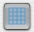
turns the grid (gray color) on and off. Distance between two lines is
0.1 unit. The slightly darker lines show the axis. For polygon and
prism the grid has a size of two units by two, centered around the
origin. For SOR and lathe the grid has a size of one unit square, with
its left and lowest corner at the origin.
-
turns the profile (blue color) on and off. Note that the line connects
only the points of the profile: no connection is made between points
and their control points (quadratic and cubic splines).
- shows or hides the points (red color) where the profile passes through.
- is only available for bzier splines and shows or hides the control points and their handles (green color).
5.4.23.5. Selecting points
All
points can be selected with a mouse click and dragged around while
holding the mouse button. Selecting multiple points is done by holding
the shift-key, when selecting or de-selecting points. The selected
points are highlighted by a black circle surrounding it. When releasing
the mouse button, the actual coordinates of the points are fixed and
are shown in the selected lines of the list of points.
|
Note: |
- Since POV-Ray™
does not allow negative x-values for the SOR and lathe (except first
and last point), you can not drag a point to the left side of the
y-axis!!
- To avoid gaps between two
segments of a bzier spline, the endpoint of one segment is always
linked with the starting point of the next segment. They are always
dragged together.
- To get smooth
transitions between segments of a bzier spline the endpoint of one
segment, the starting point of the next segment and the control points
at these points should always be on a straight line. Therefore, when
dragging a control point (green), the opposite control point is also
moved together to stay on that line. (Except for the lathe when it
risks to get a negative x-value: it will be unable to cross the
y-axis). In the same fashion, when moving a point (red) around, the
slopes of the curve at that point are locked and the control points
will follow the same move. (Except for the lathe when it risks to get a
negative x-value: it will be unable to cross the y-axis). If you want
to create a sharp edge in your curve, you can force it by holding the
ALT-key when selecting (point or control point) and dragging. Only the
selected point moves with the cursor, all other points stay put.
- The
SOR object can not compute more than one x-value for each y-value.
Therefore, when trying to drag a point below the previous point or
beyond the next point the dragging is blocked. If your profile line
(blue) is disconnected, move a little back or adjust the height of the
other points.
- This editor is designed to
create unit sized objects. So, keep in mind to use values between 0.0
and 1.0. Sometimes however a point might get off the display and not
been selectable anymore. The graphical editor has a re sizable window:
try resizing it to the greatest possible width and smallest height or
vice versa to recover lost points. If this fails, use the edit fields
to get the values back into the 0.0 to 1.0 range.
|
At the bottom left of the display you will find a toolbox, allowing some transformations on the selected points.
In the first place, you should specify if the transformation has to be applied to "All" points or only to the "Selected" ones.
Scale: enter the desired scale value and hit the "Apply"
button to execute. Values smaller than 1.0 will squish the curve, 1.0
will leave it unchanged and values larger than 1.0 will enlarge the
curve.
Move: enter the desired moving distance and hit the appropriate "arrow" button to move the point(s) in the required direction.
Rotate: enter the angle by which points should be rotated and hit the "Apply" button to execute.
Undo: The last operation is canceled and the curve is restored to the previous situation.
To the right hand side a table of edit fields with the coordinates of the points is shown.
- The
first column shows the kind and number of the point. Successive points
of the profile are numbered from 1 to n. Control points are designated
by a capital "C". An "s" means start and "e" means end. For bzier
splines the numbers increase for each next segment. Segment n starts
with "Sn", "Csn" controls the curve at Sn, "Cen" controls the curve at
En, and "En" is the last point of segment n.
- The
second column gives the x-location from the origin. Notice that this
editor has been designed to create unit sized profiles: therefore, use
entries between 0.0 and 1.0. Later on it is easy to scale it to the
required size. To move a point, select the corresponding edit field and
edit the value in the usual way. The point follows immediately on the
display. POV-Ray™ does not allow
negative x-values for the SOR and lathe objects (except first and last
point). Therefore, when you enter negative values the editor replaces
them with 0.0!!
- The third column gives the
height (y for polygon, lathe and SOR) or depth (z for prism) from the
origin. Notice that this editor has been designed to create unit sized
profiles: therefore, use entries between = 0.0 and 1.0. Later on it is
easy to scale it to the required size. To move a point, select the
corresponding edit field and edit the value in the usual way. The point
follows immediately on the display. The SOR object can not compute more
than one x-value for each y-value. Therefore, when you enter a value
lower than the previous point or higher than the next point the editor
replaces them with a legal limit value.
- Select a
point by clicking on one of the edit fields. The selected point is
highlighted with a dark frame and the edit field with a blue frame.
5.4.23.8. Add, insert or remove points
- To add a point at the end of the list, use the button.
For the bzier spline a whole segment is added. Notice that for polygon
and bzier this option is not available, since the profile is a closed
one (use insert instead).
- To insert a point before the selected point, use the button.
The inserted point gets the average value of the points between which
it is inserted. For the bzier spline the segment to which the selected
point belongs is split into two segments, placing a point halfway the
points of the original segment.
- To remove a point from the list, select it and click the 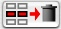 button.
The use of each panel individually should be obvious.
|
Note: |
| Only
the transformations on active panels (set check box) are written to the
text at the cursor's position. Three transformation items can be
inserted at once (in the sequence shown on the template form). |
Choosing
the function template opens a dialog which allows the user to select a
function and read a description. After entering the desired parameters
and confirming, the function is written at the cursor's position in the
text (or replaces the content of a selected block).
Functions can be chosen by type from the "types" pop-up.
In
the next list, an overview of syntax and result is shown for the chosen
group of functions. When a function is selected in the list, its
description and possible parameters with description are shown in the
next frame.
In the last frame, edit fields are shown for the required parameters. They can be filled out here.
Clicking "OK" will write the function to the text or function field.
At
the bottom you can go directly to the transformations template to set
up to three transformations if required. You could also choose a quick
color from the color template by activating the option and clicking on
the display square. At the very bottom the option 'don't wrap in pigment{}' lets you substitute certain parts (a color vector for instance) of a pigment statement in the text.
Specify a plain color (perhaps with some filter or transmit) for the object's pigment.
The option 'add comment //'
allows you to give a short description of the color shown in the
display. (visualizing a color from a color vector isn't that easy!)
The usage of each pattern is explained in POV-Ray™'s docs or in the Textures chapter of the MegaPOV manual and shouldn't cause any problems in this template dialog.
Choose any of the list patterns (brick, checker, hexagon or object) or any other color pattern.
When choosing the density_file pattern, the "Select image..." button opens the file dialog so that you can search for the "*.df3" file you had in mind to create the pigment. After selecting the file and clicking "open", the exact name of the df3 file is copied in the edit field. Of course you can also enter the name directly in the edit field.
Only appropriate options for each pattern can be set.
Whenever
a map should be used, you have the choice between two predefined
color_maps (black&white and rainbow colors) and the option 'color_map customized' where you could jump to the color_map editor (see Section 5.15, “Color map” for more information).
There is also a possibility to jump to the pigment_map editor with the choice 'pigment_map customized' (see Section 5.20, “Pigment map” for more information.
Substituting the default wave type with any legal wave type is also possible through a pop-up.
Now it is possible to use an image that will be created by POV-Ray™ and then immediately used as image_map. The image type to be used can be specified in the "file type"
pop-up. Choose gif, hdr, jpeg, pgm, png, pot, ppm, sys, tga, tiff,
function image, pigment image or pattern image. For the last three, the
"Edit pigment ..." or "Edit pattern ..."
button opens the pigment template to specify the type of pattern. Image
width and image height are the dimensions of this image in pixels. See
the pattern chapter in the POV-Ray™ manual for more information.
The "Select image..."
button opens the file dialog so that you can search for the image you
had in mind to wrap around the object. After selecting the file and
clicking "open", the exact name
of the file is copied into the edit field. Of course, if your memory is
impeccable, you can enter the name directly in the edit field.
Don't forget to specify the kind of image file you are using. When using "sys", all image types recognized by QuickTime™ can be used.
Enter
a function to be used in the edit field. You can choose any operator
from the bevel pop-up to be inserted at the cursor point.
To use a map, there is a choice between two predefined color_maps (black&white and rainbow colors) and the option 'color_map customized' where you could jump to the color_map editor. For more information, see Section 6.15, “Color map”.
There is also a possibility to jump to the pigment_map editor with the choice 'pigment_map: customized'. For more information, see Section 6.20, “Pigment map”.
Substituting the default wave type with any legal wave type is also possible through a pop-up menu.
Click "Edit Camera..." to choose a camera that will capture the required pigment.
Choose between the possible output options from the 'output' pop-up menu. For more information, see the MegaPOV doc's.
The 'don't wrap in finish {...}'
option allows you to add or replace parts of the finish statements
because only the selected options are written at your cursor's
position. The finish keyword and its brackets are omitted.
At
the bottom of the dialog you could go directly to the transformation
dialog to set up to three transformations if required. Here you can
also set the 'no_bump_scale' and 'accuracy' options.
At the very bottom the option 'don't wrap in normal{}' allows one to substitute certain parts of a normal statement in the text.
The usage of each pattern is explained in POV-Ray™'s
docs or in the chapter 'Textures' of the MegaPOV manual and shouldn't
cause any problems in this template dialog. Choose any of the list
patterns (brick, checker, hexagon or object) or other normal pattern.
When choosing the density_file pattern, the "Select image..." button opens the file dialog so that you can search for the "*.df3" file you had in mind to create the normal. After selecting the file and clicking "open",
the exact name of the df3 file is copied in the edit field. Of course
you can always enter the name directly in the edit field.
Only the appropriate options for each pattern can be set.
Also, only for the patterns where the use of a wave_type could be specified, a pop-up is provided to make your choice.
There is also a possibility to jump to the slope map's graphical editor which is explained in a separate chapter (see Section 5.21, “Slope map”). After having created a new slope_map you will come back to the normal template form.
An option to open the normal_map's editor is also available (see Section 5.19, “Normal map”). After creating a normal_map and confirming it, you will be brought back to the normal template form.
Now it is possible to use an image that will be created by POV-Ray™ and then immediately used as bump_map. The image to be used can be a function image, pigment image or pattern image.
Image width and image height are the dimensions of this image in pixels. See the chapter about pattern in the POV-Ray™ manual for more information.
The "Select image..."
button opens the file dialog so that you can search for the image file
you had in mind to create the bump_map. After selecting the file and
clicking "open", the exact name
of the image file is copied in the edit field. Of course, if your
memory is impeccable, you can enter the name directly in the edit field.
Don't forget to specify the kind of image file you are using. When using "sys", all image types recognized by QuickTime™ can be used - so you are not limited to the types allowed by POV-Ray™.
Enter
a function to be used in the edit field. You can choose any operator
from the insert bevel pop-up to be inserted at the cursor point. See
the chapter about function pattern in the POV-Ray™ manual for more information.
Substituting the default wave type with any legal wave type is also possible through a pop-up.
There is also a possibility to jump to the slope map's graphical editor which is explained in a separate chapter (see Section 5.21, “Slope map”). After having created a new slope_map you will come back to the normal template form.
An option to open the normal_map's editor is also available (see Section 5.19, “Normal map”). After creating a normal_map and confirming it, you will be brought back to the normal template form.
- Ior-index: In the "ior index"
pop-up you will find a list of predefined indexes of refraction. Pick
one and it will be displayed in the edit field next to the pop-up menu.
If you do not find the index you need in the list, then enter the
required value in the edit field.
- Dispersion: The 'dispersion'
group box controls the settings for the dispersive refraction. Violet
light bends more than red. All the intermediate colors -- orange,
yellow, green, cyan, blue -- bend in amount proportional to their place
between red and violet. Thus, white sunlight breaks up into a rainbow.
The dispersion value is the ratio of IOR values for violet to red. Good
numbers are 1.01 to 1.1. The number of dispersion elements (keyword "dispersion_samples")
specifies how much intermediate colors will show in the 'rainbow'.
Therefore; with higher numbers you get more colors and a smoother
rainbow. See the chapter on dispersion in the POV-Ray™ manual for more information.
- Light attenuation: To colorize the attenuation caused by fade_distance and fade_power in the interior of your objects use the "fade_color" keyword. More information in the chapter on fade color in the POV-Ray™ manual.
- Media: If you want to include a media in this interior statement, then tick the 'Media' check box and click the "Edit"
button. This will bring you to the Media template. More information on
the media template form can be found in another chapter (see Section 5.11, “Media”).
For a full explanation of all options used in the media statement, please read the POV-Ray™'s docs.
Media
can be used as an atmospheric effect or inside an object when written
in the interior {} statement. For the last option you get access to
this media template from within the interior's template form.
For density you could use any legal pattern. With the "Edit pattern..." button the pigment template is opened so that a pattern can be edited. The usage of each pattern is explained in POV-Ray™'s
docs and shouldn't cause any problems in that template dialog. Choose
any of the list patterns (brick, checker, hexagon or object) or other
density pattern. After confirming you will be back to the media
template.
After reading the chapter on photons in the POV-Ray™ manual, this panel shouldn't cause any problems.
5.13. Background, Fog, Rainbow, Sky sphere, Glows
This is a simple dialog with a color-field. Click on it to go to the color template.
To
use "fog", choose the fog-type "Ground_fog" or "Constant fog". The
appropriate options and edit fields for your choice appear.
This also is quite obvious how to use if you read the POV-Ray™ Documentation about the rainbow.
Through
this dialog you can only specify how many pigment { } entries should be
written in your sky_sphere { } statement. The content of each pigment {
} statement must still be entered manually in the text. After
positioning the cursor between the pigment braces, you could also use
the pigment dialog with the 'don't wrap in pigment{ }' option.
When reading the MegaPOV docs the use of this panel shouldn't cause difficulties.
Through
the color_map dialog you can design your own color_map and see the
result immediately on the display (only the color is displayed: there
is no visual control yet for filtered or transmitted transparency ).
The height of this dialog is re sizable to show more lines if your screen's resolution allows for it.
To add a point at the end of the list, use the button. The last line will be duplicated. There is a limit of 256 entries.
To insert an entry just before the selected line, use the button.
The inserted line gets the average value of the lines between which it
is inserted. You may insert up to 256 lines.
|
Note: |
| If your last created color_map was a large one, it may take some time before the dialog is displayed on screen. |
To remove an entry from the list, select it and click the button.
For each entry line, the specified color is displayed in the 'Color Picker''s
column and changes are displayed immediately. You may also click on the
displayed color to open the system's color picker and set the desired
color.
If only a grayscale map is needed, use the "Use Gray Color" button just above the Red, Green and Blue columns. The values entered in the Green column are then used for all three colors.
If anywhere a filter or transmit value is needed, you should click the "Filter" or "Transmit" buttons above these columns. If these buttons are not highlighted, filter or transmit will not be written to your color_map.
The density_map dialog shows two columns.
In the first one the location of the density pattern is entered.
In
the second column the name of a previously #declared density can be
typed. It is also possible to type the body content (without the
wrapping density { }) of a legal density statement. However, the number
of typing characters is limited to 256 and must all be written on one
line (No returns or tabs).
To add an entry at the end of the list, use the button. The last line will be duplicated. There is a limit of 256 entries.
To insert an entry just before the selected line, use the button.
Only the location of the inserted line gets the average value of the
lines between which it is inserted. You may insert up to 256 lines.
|
Note: |
| If your last created density_map was a large one, it may take some time before the dialog is displayed on screen. |
To remove an entry from the list, select it and click the button.
Now it is possible to use an image that will be created by POV-Ray™
and then immediately used as image for the material_map. The image to
be used can be a 'function image', 'pigment image' or 'pattern image'.
The pigment and pattern images can be called upon with the "Edit pigment ..." or "Edit pattern ..." buttons.
Image width and image height are the dimensions of this image in pixels. See the chapter on patterns in the POV-Ray™ manual for more information.
The "Select image..."
button opens the file dialog so that you can search for the image you
had in mind to wrap around the object. After selecting the file and
clicking "open", the exact name of the file is copied in the edit field. Of course you can always enter the name directly in the edit field.
Don't forget to specify the kind of image file you are using. When using "sys", all image types recognized by QuickTime™ can be used - so you are not limited to the types allowed by POV-Ray™.
The material_map dialog shows two columns.
- The first one is showing a counter with index numbers.
- In
the second column the name of a previously #declared texture can be
typed next to the index number where it should be assigned to. It is
also possible to type the body content (without the wrapping texture {
}) of a legal texture statement. However, the number of typing
characters is limited to 256 and must all be written on one line (no
tabs or returns are allowed).
To add an entry at the end of the list, use the button. There is a limit of 256 entries.
To insert an entry just before the selected line, use the button. All following entries will be moved to the next index value. You may insert up to 256 lines.
|
Note: |
| If your last created material_map was a large one, it may take some time before the dialog is displayed on screen. |
To remove an entry from the list, select it and click the button.
The normal_map dialog shows two columns.
- In the first one the location of the normal pattern is entered.
- In
the second column the name of a previously #declared normal can be
typed. It is also possible to type the body content (without the
wrapping normal { }) of a legal normal statement. However, the number
of typing characters is limited to 256 and must all be written on one
line no tabs or returns are allowed).
To add an entry at the end of the list, use the button. The last line will be duplicated. There is a limit of 256 entries.
To insert an entry just before the selected line, use the button.
Only the location of the inserted line gets the average value of the
lines between which it is inserted. You may insert up to 256 lines.
|
Note: |
| If your last created normal_map was a large one, it may take some time before the dialog is displayed on screen. |
To remove an entry from the list, select it and click the button.
The pigment_map dialog shows two columns.
- In the first one the location of the pigment pattern is entered.
- In
the second column the name of a previously #declared pigment can be
typed. It is also possible to type the body content (without the
wrapping pigment { }) of a legal pigment statement. However, the number
of typing characters is limited to 256 and must all be written on one
line (no tabs or returns are allowed).
To add an entry at the end of the list, use the button. The last line will be duplicated. There is a limit of 256 entries.
To insert an entry just before the selected line, use the button.
Only the location of the inserted line gets the average value of the
lines between which it is inserted. You may insert up to 256 lines.
|
Note: |
| If your last created pigment_map was a large one, it may take some time before the dialog is displayed on screen. |
To remove an entry from the list, select it and click the button.
The
graphical slope_map editor is opened from the template forms of normal
/ normal pattern or directly from the slope_map entry in the 'template form...' menu.
It presents you with a graphic display on the left of the window and a list of points on the right side.
All parts of the profile display can be turned on and off using the toggle buttons at the bottom:
-
turns the grid (gray color) on and off. Distance between two lines is
0.1 unit. The grid has a size of one unit square, with its left and
lowest corner at the origin.
- turns the profile (blue color) on and off.
- shows or hides the points (red color) where the profile passes through.
- shows or hides the slope handles (green color).
All
points can be selected with a mouse click and dragged around while
holding the mouse button. The selected point is shown with a black
circle surrounding it.
While dragging a point (red), the actual coordinates are shown at the bottom of the display.
When
selecting a slope point (green) a vertical yellow line appears. The
slope point can only be dragged along this line. The figure displayed
at the bottom is the actual slope. It is best to keep slope values
between -3 and 3.
When moving a point (red) around, the slopes of the curve at that point are locked and will follow the same movement.
To the right hand side a table of edit fields with the coordinates of the points is shown.
- The
first column gives the x-location from the origin. Notice that this
editor is designed to create unit sized profiles: therefore, use
entries between 0.0 and 1.0. To move a point, select the corresponding
edit field and edit the value in the usual way. The point follows
immediately on the display.
- The second column gives
the height from the origin. Notice that this editor is designed to
create unit sized profiles: therefore, use entries between 0.0 and 1.0.
To move a point, select the corresponding edit field and edit the value
in the usual way. The point follows immediately on the display.
- The
third column shows the slope of the curve at that point. Edit it in the
usual way, but it is best to keep slope values between -3 and 3.
- Select
a point by clicking on one of the edit fields. The selected point is
highlighted with a dark frame and the edit field with a blue frame. The
corresponding point in the preview is shown with a black circle
surrounding it.
To add a point at the end of the list, use the button.
To insert a point just before the selected point, use the button. The inserted point gets the average value of the points between which it is inserted.
To remove a point from the list, select it and click the button.
The texture_map dialog shows two columns.
- In the first one the location of the texture pattern is entered.
- In
the second column the name of a previously #declared texture can be
typed. It is also possible to type the body content (without the
wrapping texture { }) of a legal texture statement. However, the number
of typing characters is limited to 256 and must all be written on one
line (no tabs or returns are allowed).
To add an entry at the end of the list, use the button. The last line will be duplicated. There is a limit of 256 entries.
To insert an entry just before the selected line, use the button.
Only the location of the inserted line gets the average value of the
lines between which it is inserted. You may insert up to 256 lines.
|
Note: |
| If your last created texture_map was a large one, it may take some time before the dialog is displayed on screen. |
To remove an entry from the list, select it and click the button.
Allows
you to quickly add a header with some general information to your scene
text. Just type the required information and tick the checkbox of that
line.
A few standard include files are also listed. Select the needed include files or enter the name of other files needed.
The last two lines contain a version directive and a default texture, but can be used for any kind of information.
Note that all entries and settings of template forms are remembered for the next call if "OK" was clicked.
In this template form, you will find all items that can be contained in the global_settings { } statement. Refer to the POV-Ray™ Documentation and MegaPOV Documentation on string encoding, tone mapping, radiosity, photons, motion blur etc.
|
Note: |
Note that the "Open" and "Save" buttons at the bottom will save the settings of all tabs of the global_settings.
To save and open the settings of each tab individually, use the "Import" and "Export" options in the "File" menu. |
5.25. Material editor / preview
This
template groups the templates for pigment, normal, finish and interior
on one panel, so that a whole material can be specified at once. Refer
to the appropriate chapters for more information on each panel.
As
a bonus, this material can also be previewed on a few objects (sphere,
box, ...) which can be chosen from the object pop-up. You could also
preview their interaction with reflected (choose from the reflect
pop-up) and/or refracted (choose from the background pop-up)
environments.
The
scene is lit by a light source at a great distance in front of the
object. This light can be moved by rotating it. Use the top slider to
rotate it to the left or the right, or enter the value directly in the
edit field marked 'H:'. Moving the light up or down is done with the left slider or directly in the edit field marked 'V:'. A fill light at the camera's position can be switched on and off with the 'Fill' option. Enter a percentage to set the strength of this light.
Under the "Layers"
tab turn on the panels that should be used for the preview AND that
will be written to the scene text at the cursor's location. Green
indicators above the "Pigment", "Normal", "Finish" and "Interior" tabs show whether these panels have been turned on.
Do not forget to turn the layer on. This is the layer that is selected in the layer panel.
On top of the panels, above their respective tabs, a green indicator shows whether it is in use or not.
"Draw layer"
will render a preview with all settings from the selected panels for
the selected layer. Every time you made a change, to one of the
settings, you should hit this button for an updated preview.
"Draw material"
will render the material with all the layers which have been turned on.
For this version you have to select them one by one to check if the 'Layer On' check box is ticked or not.
"OK" will write the material to your scene, with all the selected items.